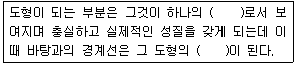
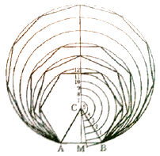
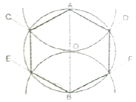
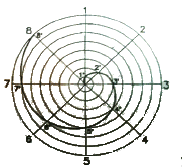
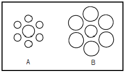
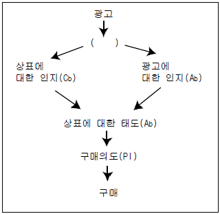
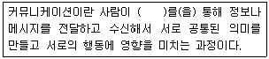
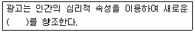
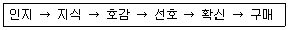
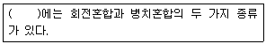

시각디자인기사 (2010-05-09 기출문제)
1과목: 시각디자인론
1. 다음 중 공공 캠페인 포스터와 가장 가까운 의미의 것은?
- 사회(계몽) 포스터
- 문화행사 포스터
- 상품광고 포스터
- 관광 포스터
(정답률: 100%)

2. 정보기술의 발달로 산업사회와는 본질적으로 다른 지식사회가 도래했다. 다음 중 지식사회의 사회적 현상이 아닌것은?
- 정신적 노동의 질 보다는 육체적 노동량이 가치를 결정한다.
- 시간적, 공간적 거리가 소멸되는 열린사회가 전개된다.
- 개성을 중시하고, 순간의 느낌을 중시하는 감성중심의 성향이 나타난다.
- 자동차, 레저 등 문화 및 여가 관련 소비재들을 급속히 증가시킨다.
(정답률: 100%)
3. 다음 중 디자인보호법상 디자인권의 효력이 미치는 것은?
- 연구 또는 시험을 하기 위한 등록디자인의 실시
- 국내를 통과하는 선박, 항공기, 차량
- 디자인 등록출원 시부터 국내에 있는 물건
- 디자인권으로 설정등록된 글자체가 상업적으로 사용된 결과물
(정답률: 84%)
4. 익스테리어(Exterior)디자인과 관련된 산업디자인 영역은?
- 시각전달 디자인
- 제품 디자인
- 환경 디자인
- 포장 디자인
(정답률: 91%)
5. CI(Corporate Identitiy)의 개념을 가장 잘 설명한 것은?
- 기업의 이미지를 널리 알리는 새로운 경영전략
- 기업의 이미지 통합을 위한 Communication 시스템을 의도적으로 만들어 내는 경영전략
- 기업의 새로운 사업확장을 위한 새로운 Communication 전략
- 기업의 이념이나 사업영역을 널리 알리는 홍보활동
(정답률: 알수없음)
6. 아르누보(Art Nouveau)에 관한 설명 중 옳은 것은?
- 아르누보는 과거의 역사적 양식을 계승, 발전시키는 운동이다.
- 윌터 그로피우스(W. Gropius)에 의해 주창되어 전 유럽에 영향을 준 운동이다 .
- 아르누보는 가구, 의상, 생활용품 등 기계를 거부하는 수공예의 복귀운동이다.
- 아르누보의 시각적 특징은 우아한 식물형의 유기적인 선이다.
(정답률: 64%)
7. 컴퓨터 입력장치가 아닌 것은?
- 타블렛
- 라이트펜
- 스캐너
- CRT
(정답률: 90%)
8. 다음 중 저작 재산권의 보호기간으로 옳은 것은?
- 저작자의 생존하는 동안과 공표된 때부터 40년간
- 저작자의 생존하는 동안과 사망 후 40년간
- 저작자의 생존하는 동안과 공표된 때부터 50년간
- 저작자의 생존하는 동안과 사망 후 50년간
(정답률: 82%)
9. 애니메이션 시스템에서 Material Editing의 역할은?
- 물체생성
- 움직임을 부여함
- 질감, 컬러를 만듬
- 연속적인 이미지를 생성
(정답률: 91%)
10. 슈퍼그래픽(supergraphic)의 목적과 거리가 먼 것은?
- 예술적 환경 조성
- 도시환경 미화
- 소비자 참여
- 다양한 홍보효과
(정답률: 82%)
11. 문제에 관련된 항목들을 나열하고, 그 항목별로 문제의 특정적 변수에 대해 검토해봄으로써 아이디어를 구상하는 방법은?
- 시네틱스법
- NM법
- 브레인스토밍법
- 체크리스트법
(정답률: 87%)
12. 다음 중 어떤 모양이나 그림을 컷으로 오려서 화면에 붙이거나 떼면서 일정한 모양으로 조금씩 움직여 촬영하는 기법은?
- 투광 애니메이션
- 셀 애니메이션
- 컴퓨터 애니메이션
- 컷아웃 애니메이션
(정답률: 93%)
13. 훌륭한 디자이너의역할과 자세가 아닌 것은?
- 소비자 의식조사, 시장조사 등 객관적 데이터를 디자인 컨셉 결정에 활용해야 한다.
- 생산자가 소비자에게 알리고자 하는 정보를 단순 명료하게 전달해야 한다.
- 디자인은 창작활동 즉 예술활동이므로 자신의 직관과 주관에 의존하여 작업해야 한다.
- 경제원칙에 입각하여 최소의 경비로 최대의 효과를 창출해야 한다.
(정답률: 91%)
14. 독일의 파울 레너(Paul Renner)에 의해 1926년에 디자인 된 서체로서 모던 산세리프의 대표적 서체는?
- 푸트라 (Futura)
- 가라몬드(Garamond)
- 타임즈 로만(Times Roman)
- 보드니(Bodoni)
(정답률: 70%)
15. 바우하우스(Bauhaus)기간 중 산업디자이너를 양성하는 디자인 대학의 성격을 띤 시기는?
- Weimar Bauhaus
- Dessau Bauhaus
- Hanes Mayer
- Mies Van de Rohe
(정답률: 84%)
16. 1920대에 시작되어 1940년대까지 계속되었으며 문자를 대신하는 도형기호를 국제적으로 표준화하는, 오스트리아의 오토 노이라이트(0tto Neurath) 가 고안한 그림문자 시스템은?
- 픽토그라피(Pictograph)
- 아이소타이프(Isotype)
- 다이어그램(Diagram)
- 매직타이프(Magictype)
(정답률: 50%)
17. 우리나라 최초의 근대광고가 개재되었던 신문은?
- 한성순보
- 한성주보
- 독립신문
- 매일신문
(정답률: 70%)
18. 로고타입(Logotype)의 특성이 아닌 것은?
- 독자성
- 상징성
- 가독성
- 신비성
(정답률: 85%)
19. 포스트스크립트(post script) 방식의 글자꼴을 표현하는 것이 아닌 것은?
- 아우트라인 글자꼴
- 벡터 폰트
- 비트맵 글자꼴
- 윤곽선 글자꼴
(정답률: 91%)
20. 커뮤니케이션 기능을 전제로 목적성을 가지고 시각화 한 그림으로 상징적, 풍자적, 해학적 또는 설명적으로 가시화 시켜 그려지는 그림을 무엇이라 하는가?
- 레터링
- 타이포그래픽
- 일러스트레이션
- 에디토리얼 디자인
(정답률: 100%)
2과목: 조형심리학
21. 루빈의 컵은 시각의 어떤 문제를 보여주는 예인가?
- 전경과 배경의 분리
- 움직임 지각
- 시인성
- 색채와 형태의 관계
(정답률: 90%)
22. ( )안에 옳은 것은?

- 틀, 수평선
- 사물, 윤곽선
- 테두리, 영역
- 성질, 방향
(정답률: 93%)
23. 초기의 게슈탈트 심리학파가 주로 연구한 분야는?
- 색채지각에 대한 실험
- 형태와 색채의 상호 보완관계
- 형태지각 일반에 대한 경험적 원리
- 색채가 형태지각에 미치는 영향측정
(정답률: 73%)
24. 다음 그림의 설명 중 맞는 것은?

- 한 점에 접하는 임의의 원 그리기
- 주어진 선에서 임의의 등분으로 나누어진 원 그리기
- 주어진 원의 반지름으로 하는 정삼각형 그리기
- 주어진 직선을 한 변으로 하는 정다각형 그리기
(정답률: 100%)
25. 밸런스(Balance)에 관한 설명 중 틀린 것은?
- 상부는 하부보다 무겁게 느껴진다.
- 좌우관계에서는 왼쪽보다 오른쪽이 무겁게 느껴진다.
- 화면의 가장자리에 위치한 물체는 중앙에 위치한 물체보다 더 가벼워 보인다.
- 중심이나 중심에 가까운 물체는 형을 크게 하거나 강한 색을 사용하여 먼 것과 밸런스를 유지해야 한다.
(정답률: 50%)
26. 자극에 관한 지식만으로는 인간의 반응행동을 예측할 수 없다. 인간의 반응 행동은 자극이 어떻게 지각되는냐에 크게 좌우된다. 이러한 인간 지각의 특성은?
- 주관적 개인성
- 정신적 조절성
- 객관적 판단성
- 물리적 활동성
(정답률: 93%)
27. 사람이 두 눈을 떴을 때 지각할 수 있는 대략적인 시각의 범위는?
- 상하 약 90도, 좌우 약 100도
- 상하 약 110도, 좌우 약 150도
- 상하 약 130도, 좌우 약 190도
- 상하 약 150도, 좌우 약 230도
(정답률: 91%)
28. 비슷한 성질을 가진 요소는 비록 떨어져 있어도 덩어리져 보이는 경향이 있다. 이 법칙을 이용한 색맹 검사표는 어떤 원리를 응용한 것인가?
- 유사의 원리
- 근접의 원리
- 패쇄의 원리
- 연속의 원리
(정답률: 84%)
29. 다음 중 기본적 시메트리(Symmetry) 구조에 해당하지 않은 것은?
- 굴절
- 역대칭
- 거울비침
- 방사
(정답률: 59%)
30. 문의 형태는 정면에서 보았을때 뿐만 아니라 문이 반쯤 열려 있을 때에도 직사각형으로 보이며, 사다리꼴로는 보이지 않는 지각 현상은?
- 크기의 항상성
- 형태의 항상성
- 명암의 항상성
- 거리의 항상성
(정답률: 100%)
31. 동식물의 생장에 관한 리듬에서 일정한 리듬을 갖고 변화되는 것이 아닌 것은?
- 조개의 단면
- 솔방울의 구조
- 나뭇잎의 형
- 동물의 눈
(정답률: 100%)
32. 원에 내접하는 정육각형 그리기에서 작도법이 잘못 설명된 것은?

- 직선 AOB(원의 중심선)를 그린다.
- A와 B를 중심으로 임의로 원호를 그린다.
- 원주와의 교점 C, D 및 E, F를 구한다.
- 원주와의 교점을 순차직선으로 연결하면 원에 내접하는 정육감형의 된다.
(정답률: 90%)
33. 단순한 사람모양의 실루엣만 보고 사람으로 인지한다면 이러한 지각의 특성은?
- 지각의 일반화
- 지각의 자율화
- 지각의 표준화
- 지각의 강조화
(정답률: 86%)
34. 깁슨(J.J. Gibson)이 말한 결의 밀도변화(texture gradient)가 만들어내는 시지각은?
- 깊이에 대한 지각
- 무게에 대한 지각
- 움직임에 대한 지각
- 밝기에 대한 지각
(정답률: 59%)
35. 다음의 그림에 해당하는 선의 종류는?

- 황금비 소용돌이선
- 아르키메대스 소용돌이선
- 피타고라스 소용돌이선
- 가우디 소용돌이선
(정답률: 70%)
36. 다음 중 황금분할의 비는?
- 2 : 1
- 1.618 : 1
- 1.5 : 1
- 1.218 : 1
(정답률: 100%)
37. 동시에 여러 각도에서 하나의 인물이나 대상물을 바라보는 것으로 이집트 미술의 부조 등에 나타난 공간 표현법은?
- 일방 투시도법
- 다각 투시도법
- 과장 투시도법
- 축소 투시도법
(정답률: 100%)
38. 다음 대비의 착시에 관한 그림의 설명 중 가장 적절한 것은?

- A의 가운데 원이 B의 가운데 원보다 실제로 크다.
- A의 가운데 원과 B의 가운데 원의 크기는 같으나 주변 원의 크기에 영향을 받아 다르게 보인다.
- A와 B의 가운데 원의 크기는 주변 원의 크기에 시각적으로 영향을 받을 수 없다.
- 둘러싼 주변의 형태가 별 모양이라면, A와 B의 가운데 원의 크기는 같아 보인다.
(정답률: 100%)
39. 시지각 특성의 군화의 원리가 아닌 것은?
- 유사성의 원리
- 연속성의 원리
- 근접성의 원리
- 분리성의 원리
(정답률: 100%)
40. 시각디자인의 기본요소에서 점을 정의한 것 중 옳은 것은?
- 기하학상의 점은 눈에 확실히 보인다. 따라서 점은 물질적 존재라고 정의를 내린다.
- 점은 물질적인 평면, 즉 기초평면과 화구 등이 최초로 접촉할 때 생기는 것이다.
- 본질적 측면에서 점은 1과 같다. 수학에서는 면과 면이 교차할 때 점의 위치를 표시한다.
- 삼각형, 톱니형, 사각형, 자유로운 모양의 윤곽을 가진 것은 점이 아니다.
(정답률: 55%)
3과목: 광고학
41. 10C초 광고이론에 심리학을 적용한 사람은?
- 마아샬(M.F.Marshall)
- 피그(A.C.Pigou)
- 레너(K.Renner)
- 스코트(W.D.Scott)
(정답률: 알수없음)
42. 광고 메시지의 전달력을 감소시키는 것은?
- 관여도를 높이기 위한 질문을 한다.
- 추상적인 포괄성을 제시하여 상상력을 높인다.
- 보다 구체적인 용어를 선택한다.
- 시청자들이 귀를 기울이도록 동기를 부여한다.
(정답률: 100%)
43. 광고물의 제작은 다음 중 어느 전략과 가장 직접적인 관련을 맺고 있는가?
- 크리에이티브 전략
- 광고 전략
- 마케팅 전략
- 제품 전략
(정답률: 86%)
44. 그림에서 ( )안에 알맞은 것은?

- 판매
- 중개
- 선전
- 지각
(정답률: 85%)
45. 카피 플랫폼(copy platform)에 대한 설명을 거리가 먼것은?
- 기업 측에서 본 제품본질과 소비자 측에서 본 소비자의 편리를 대조한 표
- 카피라이터가 작성하는 것으로 광고상품의 모든 내용이 기록되어야 함
- 새로운 아이디어와 설득력 있는 카피적성을 할 수 있는 근간이 됨
- 광고를 연속해서 제작할때 광고 소구점의 질서의 기준의 됨
(정답률: 73%)
46. 포지셔닝(Positioning)에 대한 것은?
- 문제의 개요를 파악하고 기존문헌과 자료수집을 시작하는 것
- 자유로운 발상력과 이상적인 비판력을 분리시키는 것
- 프로덕트 아이디어를 기술적으로 실현 가능한 것으로 만들어가는 것
- 광고하려는 상품이나 기업을 사람들의 마음속에 어떻게 위치시킬 것인가를 개념화하는 것
(정답률: 100%)
47. 스폰서를 참여하여 프로그램 전후에 행해지는 광고를 무엇이라 하는가?
- 프로그램 광고
- 스파트 광고
- 시보 광고
- 특집 광고
(정답률: 46%)
48. 인쇄광고의 전형적인 레이아웃 중 네덜란드 에술가의 이름을 딴 것으로 장방형의 요소를 세로와 가로로 조합시킨 레이아웃은?
- 몬드리안형 (Mondrian Layout)
- 픽처 윈도우형 (Picture Window Layout)
- 프레임형 (Frame Layout)
- 실루엣형(Silhouette Art Layout)
(정답률: 84%)
49. 그린 컨슈머(Green Consumer)의 설명으로 틀린 것은?
- 환경 문제에 대한 관심과 책임감을 가지고 환경보전을 이룩하려는 소비자
- 환경에 문제가 있는 상품을 생산하는 기업의 지지나 구매를 거부하는 소비자
- 유가공 식품을 거부하고 식물성 식품만 구매하는 소비자
- 상품의 소비를 감소시키키 위하여 근검한 소비 생활을 하는 소비자
(정답률: 93%)
50. 소비자 행동에서 개인의 행위, 관심, 태도에서 표현될 수있는 것으로 세상을 살아나가는 개인의 삶의 방식으로 정의되는 것은?
- 개성
- 준거집단
- 연령
- 라이프스타일
(정답률: 82%)
51. ( )안에 옳은 내용은?

- 기호(sign)
- 심볼(symbol)
- 마인드(mind)
- 물상(物象)
(정답률: 알수없음)
52. ( )속에 들어갈 적합한 단어는?

- 경로
- 욕구
- 문화
- 논리
(정답률: 92%)
53. 광고 기획자로서 광고주와 광고대행사간의 연결고리 역할을 하는 직책은?
- AE
- CD
- 카피라이터
- 아트디렉터
(정답률: 75%)
54. 광고대행사의 보상 중 매체사가 광고지면 또는 시간을 구매한 광고 대행사에 지불하는 금액은?
- 매체수수료
- 매체보수
- 인센티브
- 매체사용료
(정답률: 60%)
55. 다음 소비자들의 광고메시지 수용과정의 모형 중에서 정서적 태도를 보이는 단계는?

- 인지, 지식
- 지식, 호감
- 호감, 선호
- 선호, 확신
(정답률: 93%)
56. TV CM 프로덕션 선정을 위한 체크사항으로 거리가 먼것은?
- 능력있는 연출자가 있는가
- 광고주 요구에 순응 하는가
- 카메라맨이 촬영 능력이 있는가
- 편집력이 있는가
(정답률: 77%)
57. 브레인스토밍과 관련이 없는 것은?
- 알렉스 오스본이 생각해낸 방법이다.
- 아이디어를 비판하지 않는다.
- 사고의 연쇄반응을 이용한다.
- 아이디어의 양이 정해져 있다.
(정답률: 100%)
58. 다음 중 광고의 목적이 아닌 것은?
- 제품가격과 이익을 높인다.
- 시험구매를 유도한다.
- 제품의 사용횟수나 양을 늘린다.
- 브랜드 선호도를 높인다.
(정답률: 알수없음)
59. 효과적인 광고 표현에 필요한 5I 원칙에 들지 않는 것은?
- 아이디어(Idea)
- 이미지(Image)
- 충동/행위유발(Impulsion)
- 필요한 정보 (Information)
(정답률: 40%)
60. TV CM 제작시 표현아이디어는 영상과 음성으로 나누어 시나리오화 되는데 이 시나리오를 무엇이라 하는가?
- visual
- slogan
- storyboard
- illustration
(정답률: 92%)
4과목: 색채학
61. 다음 중 빨강의 먼셀 기호는? (KS표준 기준)
- 5RP 3.5/4.5
- 5R 8/4
- 5R 9/5
- 7.5R 4/14
(정답률: 85%)
62. 오스트발트의 조화론 중 등백계열 조화에 해당되는 것은?
- pa-ia-ca
- pa-pg-pn
- ca-ga-ge
- gc-lg-pl
(정답률: 73%)
63. 문.스펜서 색채조화론에서 미도(美度)는 일반적으로 얼마 이상이면 그 배색이 좋다고 하는가?
- 0.9
- 0.7
- 0.5
- 0.3
(정답률: 75%)
64. 색 지각을 일으키는 가장 기본적인 요건은?
- 물체
- 프리즘
- 빛
- 망막
(정답률: 100%)
65. 다음 중 색상을 구별하는 망막의 시세포는?
- 추상체
- 간상체
- 홍채
- 수정체
(정답률: 알수없음)
66. 어떤 색이 같은 색상의 선명한 색 위에 위치하면 원래의 색보다 훨씬 탁한 색으로 보이고 무채색 위에 위치하면 원래의 색보다 맑은 색으로 보이는 대비현상은?
- 명도대비
- 채도대비
- 색상대비
- 연변대비
(정답률: 86%)
67. 눈의 구조에 대한 설명으로 틀린 것은?
- 망막상에서 상의 초점이 G히는 부분을 중심와라 한다.
- 망막의 맹점에는 광수용기가 없다.
- 눈에서 시신경 섬유가 나가는 부분을 유리체라 한다.
- 홍채는 눈으로 들어오는 빛의 양을 조절한다.
(정답률: 60%)
68. 9개의 검정 정사각형 사이의 교차되는 흰 부분에 약간 희미한 점이 나타나 보이는 착각이 일어난다. 이와 같은 현상은?
- 한난대비
- 채도대비
- 계시대비
- 연변대비
(정답률: 82%)
69. ( )안에 알맞은 것은?

- 감산혼합
- 색료혼합
- 중간혼합
- 보색혼합
(정답률: 80%)
70. 유리병 속의 액체나 얼음덩어리처럼 공간의 투명한 부피를 느끼는 색은?
- 투명면색
- 투과색
- 공간색
- 물체색
(정답률: 84%)
71. 우리가 영화 화면을 볼 때 규칙적으로 화면이 연결되어 언제나 지속되어 보이는 것과 관련 있는 것은?
- 정의 잔상
- 부의 잔상
- 대비 효과
- 동화 효과
(정답률: 93%)
72. 제품의 색채 계획에 있어서 가장 먼저 선택해야 할 속성은?
- 색상
- 채도
- 명도
- 보색
(정답률: 100%)
73. 주변의 색의 순도를 올리면 그대로 색상이 유지되지 않고 채도의 단계에 따라 색상이 달라져 보이는 현상은?
- 베졸트 브뤼케 현상
- 색음 현상
- 색각 항상 현상
- 에브니 효과 현상
(정답률: 50%)
74. 적색에 백색의 색료를 혼합했을 때 채도의 변화는?
- 낮아진다.
- 혼합하기전과 같다.
- 높아진다.
- 조금 높아진다.
(정답률: 91%)
75. 오스트발트(Ostwald)의 표색계에 대한 설명 중 틀린 것은?
- 혼합하는 색량의 비율에 의하여 만들어진 체계이다.
- 빨강(R), 노랑(Y), 녹색(G), 파랑(B), 보라(P)의 5색을 같은 간격으로 배열하였다.
- 기본이 되는 색채는 완전색 C, 이상적 백색 W, 이상적 흑색 B이다.
- 헤링(E.Hering)의 4원색 설을 기본으로 하였다.
(정답률: 70%)
76. 명소시에서암소시로 이행할 때 붉은 색은 어둡게 되고 녹색과 청색은 상대적으로 밝게 보이는 현상은?
- 색순응 현상
- 오스트발트 현상
- 푸르킨예 현상
- 명암순응 현상
(정답률: 92%)
77. 상품의 색채에 대하여 고려해야 할 사항으로 틀린 것은?
- 책상과 캐비넷의 회색 명도는 N5 이하로 유지해야만 효율적이다.
- 색료를 선택할 때 내광, 내후성을 고려해야 한다.
- 재현성을 항상 염두에 두고 색채관리를 해야 한다.
- 제품의 표면이 클수록 더욱 정밀한 색채의 통제가 요구 된다.
(정답률: 62%)
78. 색입체에 관한 내용으로 틀린 것은?
- 색상, 명도, 채도를 3차원 공간에 배열한 것이다.
- Munsell의 색입체는 나무 모양이다.
- Ostwald의 색입체는 삼각추체 모양이다.
- 명도순으로 된 무채색 축을 색입체의 중심에 두었다.
(정답률: 50%)
79. 톤(Tone) 분류법의 특징에 대한 설명이 틀린 것은?
- 색채를 기억하기가 쉽다.
- 색채조화를 생각하기가 쉽다.
- 색상 차에 따른 분류를 세분한 것이다.
- 이미지 반영이 쉽다.
(정답률: 72%)
80. 대비현상과는 달리 인접된 색과 닮아 보이는 현상은?
- 잔상현상
- 퇴색현상
- 동화현상
- 연상감정
(정답률: 100%)
5과목: 사진 및 인쇄제판론
81. 인쇄기계를 가압하는 방식에 따라 분류할 때 해당되지않는 것은?
- 회전식
- 원압식
- 평압식
- 윤전식
(정답률: 67%)
82. 다음 할로겐화은 중 감광재료로 사용되지 않는 것은?
- AgBr
- AgCl
- AgI
- AgF
(정답률: 85%)
83. 다음 중 피사계 심도에 관한 설명으로 옳은 것은?
- 촬영거리가 멀수록 피사계 심도는 얕다.
- 렌즈의 초점거리가 짧을수록 피사계 심도는 깊다.
- 조리개 구멍이 클수록 피사계 심도는 깊다.
- 망원렌즈는 표준렌즈에 비해 피사계 심도가 깊다.
(정답률: 60%)
84. 평판 오프셋 인쇄기의 구성요소가 아닌 것은?
- 압통
- 판통
- 아닐록스 롤러
- 고무통
(정답률: 59%)
85. 4×5" 뷰 카메라(View Camera)로 촬영을 할 때 수직면의 왜곡을 보정하기 위한 Movement는?
- Rise 가
- Fall
- Tilt
- Swing
(정답률: 100%)
86. 다음 중 컬러네거티브 필름의 현상약품에 해당되는 것은?
- C - 41
- E - 6
- D - 72
- D - 76
(정답률: 80%)
87. 컬러 네거티브 필름에 있어서 청감 유제층에서 만들어지는 색은?
- Cyan
- Magenta
- Yellow
- Blue
(정답률: 알수없음)
88. 양극산화 처리된 PS판의 특징으로 옳지 않은 것은?
- 표면의 경도가 높기 때문에 모랫발의 마멸이 적고 내쇄력이 크다.
- 양극산화 처리된 PS판은 제판 공정이 복잡하므로 표준화하기 어렵다.
- 양극산화 처리된 PS판의 망점 재현성은 일반 PS판 보다 좋다.
- 산화 피막은 미세한 다공질이므로 보수성이 양호하다.
(정답률: 82%)
89. 뷰 카메라(View Camera)의 무브먼트 효과가 아닌 것은?
- 피사계 심도를 증대시킨다.
- 동적인 주제촬영에 효과적이다.
- 이미지 형태를 임의로 변형시킨다.
- 피사체의 왜곡을 수정할 수 있다.
(정답률: 알수없음)
90. 인쇄물에 각각 다른 문자, 사진 등 인쇄물의 내용을 바꾸어 인쇄할 수 있고, 필요한 매수를 즉시 인쇄할 수 있는 방법은?
- 오프셋 인쇄
- 볼록판 인쇄
- 스크린 인쇄
- 디지털 인쇄
(정답률: 100%)
91. 삼각대(Tripod)의 주된 사용 목적으로 가장 거리가 먼것은?
- 정밀 묘사
- 흔들림 방지
- 스냅 촬영
- 야경 촬영
(정답률: 90%)
92. 다음 중 아연판 표면에 주로 사용하는 산화방지제의 주성분은?
- 빙초산
- 질산수용액
- 칼륨명반
- 중크롬산암모늄
(정답률: 70%)
93. PVA제판에서 화선 부분에서 인쇄잉크가 잘 부착되고 인쇄에서 내쇄력을 높이기 위하여 도포하는 약품은?
- 아라비아고무
- 래커
- 수정액
- 감광액
(정답률: 58%)
94. 다음 중 인쇄물 표면가공의 목적이 아닌 것은?
- 인쇄물에 광택을 부여한다.
- 인쇄물의 퇴색을 방지한다.
- 장식효과를 부여하여 책을 고급스럽게 한다.
- 생산단가를 줄인다.
(정답률: 100%)
95. 인쇄잉크 건조제에서 주로 잉크 피막의 표면 건조를 촉진시키는 것은?
- 납
- 코발트
- 망간
- 구리
(정답률: 70%)
96. 다음 중 롤 필름에 해당되지 않는 것은?
- 150형 필름
- 120형 필름
- 70mm 필름
- 4×5" 필름
(정답률: 82%)
97. 컬러 네거티브필름의 구조를 층별로 순서대로 옳게 나타낸 것은?
- 보호막층 - 청감유제층 - 녹감유제층 - 적감유제층
- 보호막층 - 녹감유제층 - 적감유제층 - 청감유제층
- 보호막층 - 적감유제층 - 청감유제층 - 녹감유제층
- 보호막층 - 청감유제층 - 적감유제층 - 녹감유제층
(정답률: 73%)
98. 컬러 슬라이드 필름 현상시 필름 상에 화학적으로 노출을 주는 과정은?
- 제1현상(First Development)
- 반전욕(Reversal Bath)
- 표백(Bleach)
- 발색현상(Color Development)
(정답률: 40%)
99. 35mm필름을 사용하는 카메라에서 앞뒤로 배치된 물체의 상대적 크기가 가장 정상적으로 보이게 하는 렌즈의 초점거리는?
- 28mm
- 50mm
- 1⑤mm
- 1000mm
(정답률: 90%)
100. 초점거리가 아주 짧은 렌즈로 수중의 물고기가 위를 볼 때 물의 굴절율로 수면 위로 모든 것을 볼 수 있다는 뜻에서 유래된 어원을 갖는 렌즈는?
- 줌렌즈
- 광각렌즈
- 어안렌즈
- 비구면렌즈
(정답률: 93%)